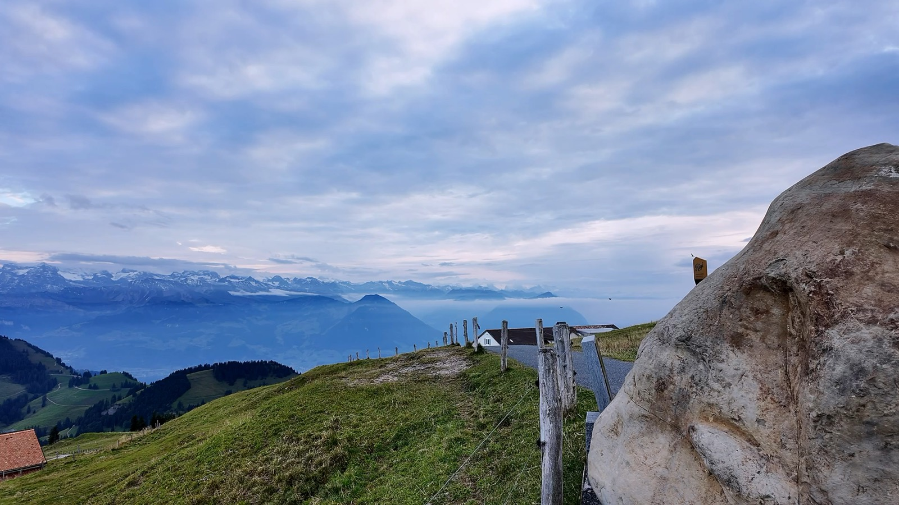

Trails & Summits
Hikes where the view at the top made every step worth it.
My Favorite Frames
What I Like to Shoot
Hikes where the view at the top made every step worth it.
Old architecture that glows long after the sun goes down.

Short clips for when a single frame is not enough.
A Frame I Keep Coming Back To
Shot handheld from across the Danube on a cold November night. ISO 8000 was the only way to keep the shutter quick enough to hold the warm light on the building, and I still like how it turned out.
In Motion
Sixteen seconds of clouds drifting over a grassy mountain ridge, with snowy peaks on the horizon. Hit play and take a breath.
About Me
I take photos for fun. I usually have a camera with me on hikes and trips, and these are some of the shots I like best.
Currently shooting on a Fujifilm X-T5